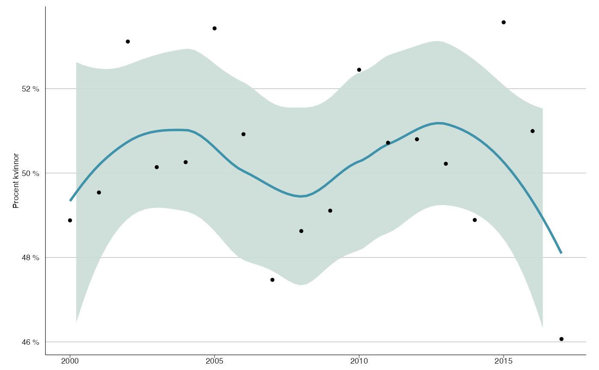

Simple function to show trend in percent (y_var) between different years
(x_var) using ggplot2::geom_smooth().
trend_plot(
df,
x_var,
y_var,
y_breaks = 5,
y_lim = c(54.9, 65.1),
x_breaks = 5,
y_lab = "Procent kvinnor",
x_lab = "år",
title = NULL,
subtitle = NULL,
line_color = slr_colors(1),
fill_color = "#CADBD5",
line_size = 1,
point_size = 1,
percent_accuracy = 1
)Data frame.
X and Y variable.
Length between each break on y-axis.
Limit on y-axis.
Length between each break on x-axis.
X and Y-axis labels, use NULL for no label.
Plot title, NULL for no title.
Small text under title, NULL for no subtitle.
Color of the line.
Fill color
Size of the line.
Size of the points.
Set accuracy for scales::percent_format().
ggplot object containing trend plot.
# Creating data
set.seed(123)
df <- data.frame(year = 2000:2017, prob = rnorm(18, 0.5, 0.02))
# Trend
trend_plot(df, 'year', 'prob', y_breaks = 2, y_lim = range(df$prob) * 100)
#> `geom_smooth()` using formula 'y ~ x'
